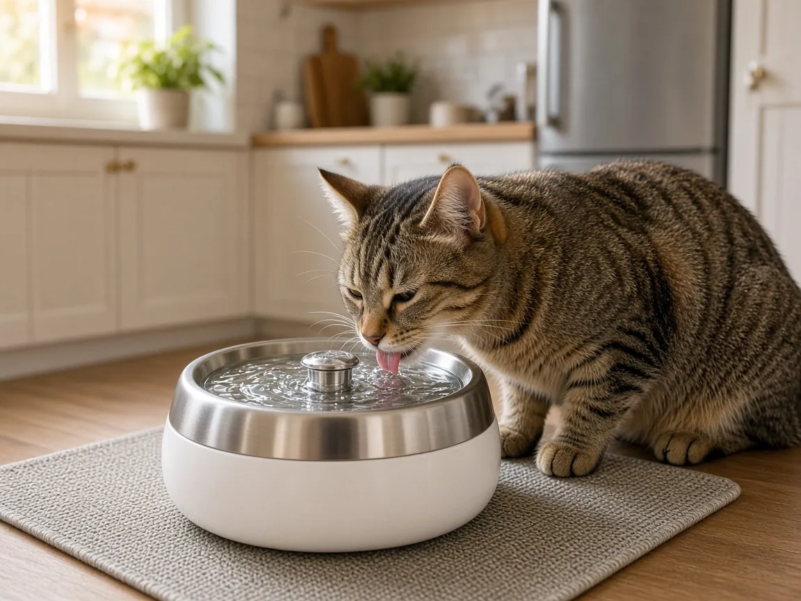

Meilleure fontaine à eau pour chat 2026

Beaucoup de chats boivent peu, surtout s’ils mangent des croquettes. Une fontaine fait circuler et filtre l’eau, ce qui incite souvent à boire davantage. En appartement, le bruit et l’entretien font la différence.
Les critères
- Pompe : les modèles à pompe sans fil (alimentée par induction) évitent qu’un câble trempe dans l’eau et sont plus faciles à nettoyer.
- Bruit : un ronronnement léger est normal ; un bruit qui augmente signale souvent un niveau d’eau bas ou une pompe encrassée.
- Capacité : environ 1,5 à 3 L pour un chat ; plus si plusieurs chats ou absences d’un week-end.
- Matériau : l’inox ou la céramique se nettoient mieux que le plastique, sensible aux rayures.
- Filtres : vérifie le prix et la disponibilité des filtres de rechange avant d’acheter.
- Connectée ou non : l’application peut alerter sur le niveau d’eau ou le changement de filtre ; utile, pas indispensable.
Modèles à considérer
PetKit Eversweet
Gamme populaire avec pompe sans fil sur les versions récentes, compatible avec l’application PetKit pour certaines versions. Pratique si tu as déjà une litière ou un distributeur de la marque.
Voir sur AmazonPetlibro (gamme Dockstream et autres)
Fontaines avec ou sans connexion, options en inox. Bonne alternative si tu veux suivre la consommation d’eau via une application.
Voir sur AmazonXiaomi Smart Pet Fountain
Design sobre, pilotage via l’application Xiaomi Home. Intéressant dans un appartement déjà équipé de l’écosystème Xiaomi.
Voir sur AmazonCatit Pixi / Catit Flower
Modèles simples et répandus, non ou peu connectés, filtres faciles à trouver. Parfaits pour tester si ton chat aime l’eau courante.
Voir sur AmazonEntretien : le point qu’on oublie
Change l’eau et rince le réservoir régulièrement (plusieurs fois par semaine), nettoie la pompe selon la notice et remplace le filtre au rythme indiqué. Une fontaine mal entretenue est pire qu’une gamelle propre. Place-la loin de la litière et de la gamelle de nourriture.
Notre avis
Pour la plupart des chats d’appartement, une fontaine à pompe sans fil d’environ 2 L, facile à démonter, suffit. La connexion est un bonus pour les foyers déjà équipés (PetKit, Xiaomi). Complète avec un distributeur de croquettes connecté pour les longues journées.
Un chat qui boit soudainement beaucoup plus ou beaucoup moins doit être montré au vétérinaire.
Liens affiliés Amazon : une commission peut être versée, sans surcoût pour toi.